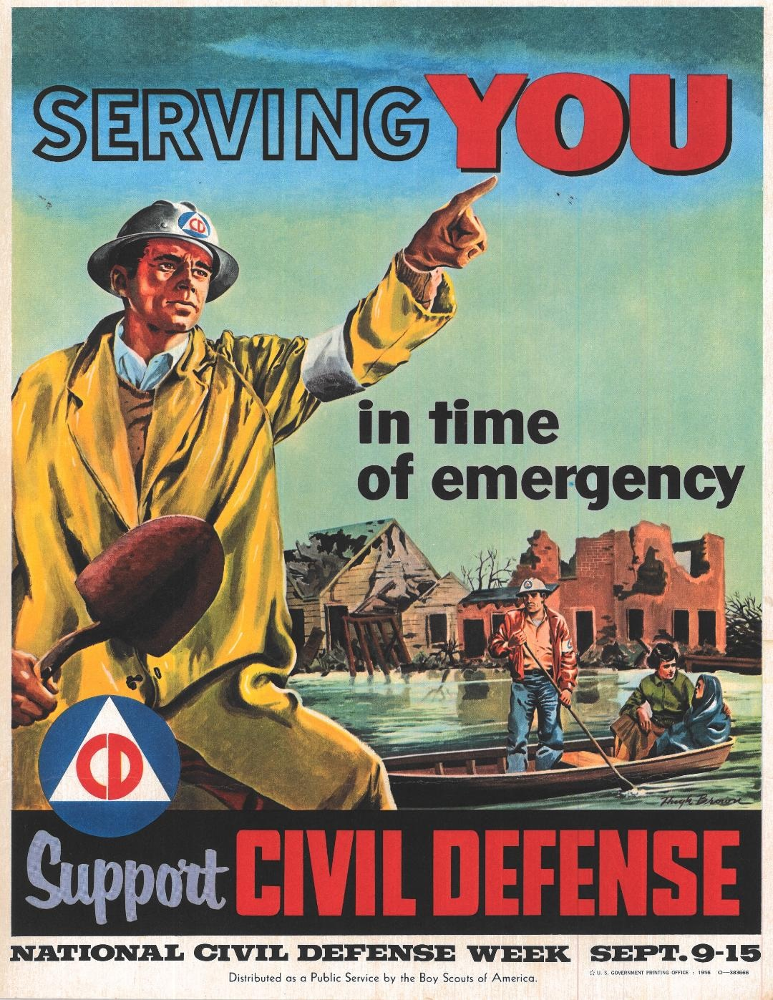

Notificaciones sin un feed
Cuando otra persona coloca una alerta en la parte del mapa que estás observando, sobre un tema que estás mostrando en ese momento, la verás de inmediato. También puedes pedirle a la app que te envíe una notificación del sistema. Al tocar la notificación se abrirá la alerta en la app, para que puedas ver la conversación sobre ella.
Debes activar esta función de forma expresa, usando el botón «CD» de la app. Entonces el sistema te preguntará si quieres habilitar las notificaciones.
- Si respondes «sí», después podrás activar y desactivar las notificaciones desde el mismo lugar de la app.
- Si respondes «no», o si más tarde desactivas las notificaciones en la configuración del navegador o del sistema, tendrás que volver a habilitarlas desde la configuración del navegador o del sistema. En los dispositivos móviles de Apple, las notificaciones solo están disponibles cuando Civil Defense está instalada.

Si habilitas las notificaciones, también las verás en estos casos:
- Si otra persona coloca una alerta cerca de tu posición actual sobre un tema que estás siguiendo, incluso si estás mirando otra zona del mapa.
- Si alguien responde a una alerta que has abierto dentro del mapa actual.
Privacidad
Si la app CivilDefense está en ejecución, la notificación se genera por completo en el mismo dispositivo, sin pasar por ningún otro servicio.
Sin embargo, las plataformas móviles pueden ser muy agresivas al cerrar las apps que has abierto pero que no se están mostrando en pantalla. En ese caso, la alerta debe «empujarse» (como un mensaje de texto) en dos pasos:
- Primero, la red de CivilDefense necesita enviar el mensaje, igual que lo haría si la app estuviera en ejecución, pero ahora a través de un «servicio push».
- Actualmente, esto proviene de civildefense.io.
- En la próxima versión principal, provendrá de la propia red entre pares (peer-to-peer).
- Segundo, el servidor push (Apple o Google) envía el mensaje a tu dispositivo. Ellos saben que recibiste un mensaje push, pero no la aplicación, el tema, el remitente ni el contenido.
